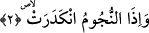
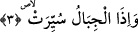

2. Yıldızlar (kararıp) döküldüğünde,
Âyette geçen “en-nücûm” kelimesi “necm” kelimesinin çoğuludur. Arapçada “necm”,
doğan yıldız demektir. Nitekim bitkinin yerden bitmesi ve insanın aklına herhangi bir
görüşün gelmesi, yıldızın doğmasına benzetilerek bu kökün kullanımıyla; “neceme’n-
nebtu/bitki doğdu” ve “neceme’r-ra’yu/filancanın kafasında bir görüş belirdi” denilir.
“Necm” kelimesi ifâde kalıbı olarak ya masdar veya ism-i merra yâni bir defalığı ifâde
eden isimdir.
Âyette geçen “inkederat” fiilinin anlamı -tercümede gösterdiğimiz üzere- yıldızların
hızla yerlerinden dağılıp dökülmeleri demektir. Nitekim İnfitar sûresinin ikinci âyetinde
aynı anlama gelmek üzere “yıldızlar dağılıp döküldüğü zaman” (İnfitar 82/2) ifâdesi
kullanılmaktadır. Arapçada “inkidar” kelimesi-sözcük olarak- “dökülmek” anlamınadır.
Burada “yıldızların dökülmesi” ifâdesinin kullanılması sebebsiz değildir. Çünkü o gün
gökyüzü yıldız yıldız yağacak ve semada yere düşmeyen hiçbir yıldız kalmayacaktır.
Çünkü yıldızlar -İbn Abbas (r.a.)’nın ifâdesine göre- gökle yer arasında asılı
kandillerde nurdan zincirlere asılıdır. Bu zincirler nurdan yaratılmış meleklerin
ellerindedir. Göklerde ve yerde bulunan bütün mahlukat öldüğü zaman bu yıldızlar
meleklerin ellerinden düşeceklerdir. Böylece gökten yıldız yağacaktır. Çünkü o
zincirleri tutan melekler artık ölmüşlerdir.
Âyetin bu ifâdesinde “hayat” olan ruh güneşinin ışığının dürülüp büküleceğine ve bu
ışığın bedenden kabzedileceğine, alınacağına ve zâhirî ve bâtınî on havas yıldızının
dağılacaklarına işâret edilmektedir. Ayrıca bu âyette hakikatin zuhûr etmesi esnasında
mutlak hakikat varlığından yansıyan izafi varlığın dürüleceğine, hüviyyet yıldızlarının
ve mahiyyet heykellerinin hiçbir izi kalmayacak şekilde yok olacağına işâretler vardır.
Çünkü bu hüviyyet yıldızlarıyla mahiyyet heykelleri yokluğa nisbet olunmuşlardır ve
onlar yok sayılırlar.
3. Dağlar (sallanıp) yürütüldüğünde,
Dağlar, yeryüzünden kaldırılıp meydana gelen bir sarsıntı ile yerlerinden
uzaklaştırıldığında… Ancak dağlar, bu aşamada henüz bulut gibi havada
yürütülmeyecektir. Çünkü bu, sura ikinci kez üfürülüşten sonra olacaktır. Âyetin
deyimiyle “seyr” yeryüzünde yürümek demektir. “Tesyîr” ise yürüyen kimseden